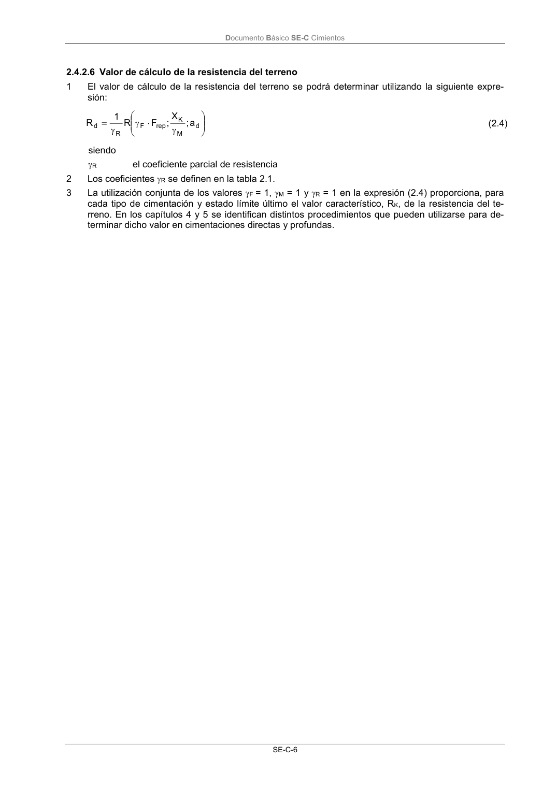

DB-SE-C · 2.4.2.6 Valor de cálculo de la resistencia del terreno · versión 2019-12-20
SHA256: a71133f4b0dca253e45ea3071c70f2a512354bcc5cd841bf89b1a502f567ac5e · página física 11 de 165 · métodos de encabezado
solo si están cotejados.
Formatos: Markdown · JSON de bloques · PDF p. 11 · imagen PNG
Documento Básico SE-C Cimientos SE-C-6 2.4.2.6 Valor de cálculo de la resistencia del terreno 1 El valor de cálculo de la resistencia del terreno se podrá determinar utilizando la siguiente expre- sión: d M K rep F R d a ; X ; F R 1 R (2.4) siendo R el coeficiente parcial de resistencia 2 Los coeficientes R se definen en la tabla 2.1. 3 La utilización conjunta de los valores F = 1, M = 1 y R = 1 en la expresión (2.4) proporciona, para cada tipo de cimentación y estado límite último el valor característico, RK, de la resistencia del te- rreno. En los capítulos 4 y 5 se identifican distintos procedimientos que pueden utilizarse para de- terminar dicho valor en cimentaciones directas y profundas.
